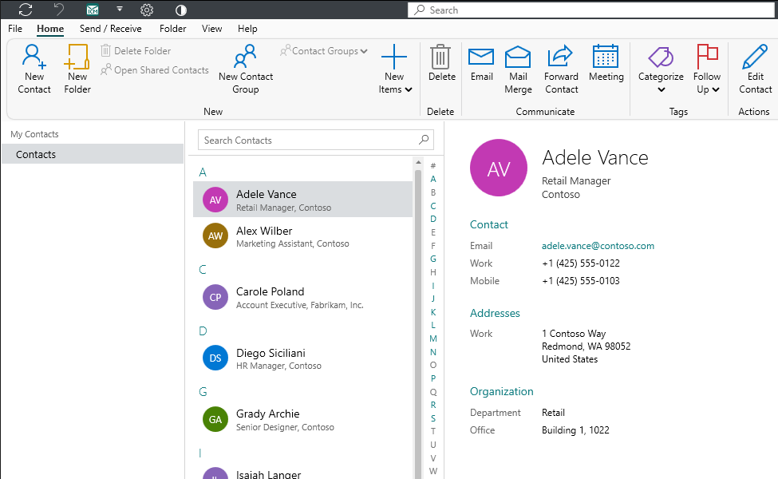
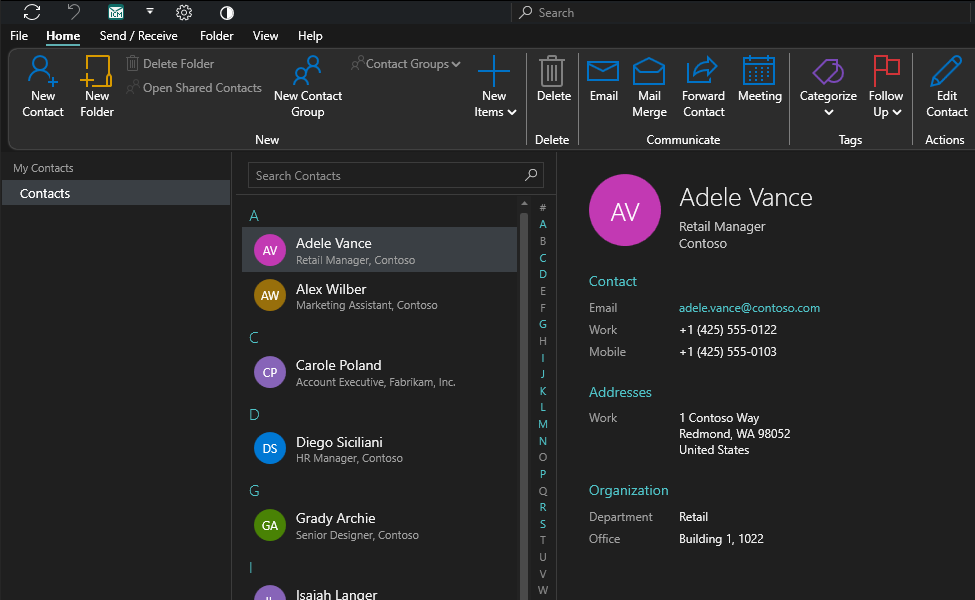

- Contacts with the full contact form, pictures and contact folders.
- People, Business Card, Phone and List views, with an A–Z index.
- Contact groups to send to several people under one name.
- Names in your order: sort contacts by first or last name, and choose how new contacts’ Full Name and File As are written, in File → Options → People.




- Colleagues’ shared contacts, the contacts of every account you’ve added, and the organization’s Global Address List.
- Contacts’ pictures beside the sender of a message, when the directory has none.
- Duplicate contacts caught: saving a contact you already have offers to add it anyway or update the one you have, as Outlook does.
- Mail Merge: one message per contact, with merge fields.
Missing something you used in Outlook? Choose Help → Suggest a Feature in the app. Found a bug? Choose Help → Report a Bug.